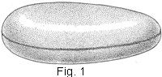
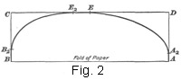
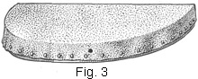
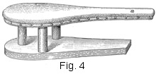

1933—Principles of Tailoring
Woman's Institute of Domestic Arts & Sciences, by Mary Brooks Picken
Essentials of Tailoring
SCOPE OF TAILORING
1. What is Tailoring?—Tailoring is one of the foremost of the sewing arts, because more than two-thirds of the garments worn require some form of tailoring. It really is a recognized trade followed by many hundreds of people, men especially. Time, patience, and a knowledge of both garment construction and materials are essential in one's training for tailoring.
Until about a half century ago, many materials were of a very heavy quality, so that much care had to be given to their assembling, basting, steaming, and pressing to obtain good-looking results. Today, with the weaver's art so perfected that exquisite fabrics are offered on all sides, very inexpensively priced in proportion to quality, the responsibility is reversed. Now, one needs not so much to beautify the fabric by careful sewing as to do justice to its beauty by sewing it as perfectly as possible. When much sewing, basting, and pressing, especially machine sewing, must be done, the work properly comes under the head of tailoring—a word frequently misunderstood.
Many persons, in thinking of tailoring, think only of suits with padding and heavy seams, braid-trimmed skirts, and linings throughout. But today, one tailors a silk, machine-made blouse, a sports skirt, or a simple frock of linen or flannel. Sheer materials, fine silks, and laces are generally reserved for lingerie sewing or dressmaking, but all other moderately firm fabrics that require the friendship of sponge cloth and iron and that demand basting and straight, perfect stitching, may safely be classed with tailoring materials.
2. Necessity for Good Equipment.—Making tailored garments is often regarded a much more difficult task than making fluffy, frilly ones, but this is not necessarily the case. True, tailoring is not of the sewing-basket variety. One must spread all pieces out on a flat surface, cut all seam edges neatly, join all edges accurately, and baste with a definite precision. But none of these is a difficult process nor requires any more effort than work on lingerie garments, particularly if the right sort of equipment is chosen.
In addition to the special equipment mentioned later, be sure to have a cutting board or table, on which both cutting and basting may be done; a firm, well-padded ironing board; shears that are sharp; and a machine that is well regulated as to stitch, an elastic, medium-long stitch proving best, because tailoring materials are usually fairly heavy and by their thickness shorten the stitch somewhat. Also, have your brush (a substantial clothes brush is satisfactory, or a tailor's brush is even more desirable) washed and kept perfectly clean for lifting the nap on fabrics when, by accident, it is pressed too flat with too hot an iron. Number 7 or 8 sewing needles are usually best for tailoring. Silk or mercerized cotton thread should be used for tailoring.
3. Requisites of Good Tailoring.—In tailoring, very accurate patterns are almost a necessity, for in materials that are even slightly heavy, perfect seams are necessary. Irregular seams might go unnoticed in a voile dress that is full and easy, but in a linen dress, because of its very plainness, a jagged or an uneven seam will spoil the whole appearance.
A good tailor always sponges and shrinks his material, so that the seams of the garment will not shrink unevenly in the process of making nor spot or shrink from dampness when it is worn. Of course, all woolen materials are shrunk, or sponged, in the process of manufacture; nevertheless, in spite of the fact that merchants in some cases insist that certain materials do not have to be treated in this manner, it is advisable to do so, -because materials that are kept in stock become relaxed and need to be responged to be in condition for cutting. In the large cities, it is possible to have the cloth shrunk by the merchant from whom it is purchased, usually at a small additional cost per yard; but in the smaller cities and towns, the stores, as a rule, are not equipped to carry on such work, and it must of necessity be done at home.
4. With the material shrunk and the perfection of his pattern determined, a tailor marks each side exactly alike so that the pattern pieces will go together perfectly. Next, he bastes with as much care as though the garment were to be made by hand. Before he starts to stitch, he tries a scrap of two thicknesses of material under the presser foot to satisfy himself that the machine is free of dripping oil, that the stitch is easy and of the right length, that the tension is free enough, that the machine -needle is smooth and perfect at its point, and that the needle itself is correctly set. With these precautions, neat satisfying work is sure to result and a pride be developed that will make tailoring a real joy and inspiration.
TAILORING EQUIPMENT
5. So that the best results may be obtained in the development of tailored garments, a certain amount of equipment is necessary. As many of these articles are in common use in the home, first see what equipment you have on hand that may be utilized, and then provide as much new equipment as you consider essential for your purpose. The various kinds of tailoring equipment are considered here, for even though some of these are not an actual necessity for home use, all are a decided convenience. Then, too, it is important that you gain a very clear understanding of their appearance and use so that if you are ever called upon to do such work you will be familiar with all the equipment.
6. Sponge and Press Cloths.—If you intend to do much pressing, you will find one sponge or, better still, a medium-size sponge and two press cloths, a convenience. These cloths should be used for no other purpose than sponging and pressing materials and garments in the making.
Firm, unbleached muslin or light-weight duck or drilling is suitable for sponge cloths, ¼ to ½ yard of this being sufficient for each one. Take the precaution not to have the press cloths linty nor too sheer. For each press cloth, provide about 1½ yards of unbleached muslin; It is not necessary to hem any of these pieces, but, if you wish, you may pink or overcast the raw edges to prevent them from raveling.
7. In order to remove the filling that is put in when the material is woven, boil the cloths before using them in fairly strong soapsuds to which a pinch of baking soda has been added. This precaution should always be taken, because new muslin scorches readily and because it is almost impossible for the new material to absorb sufficient water to be of any service in sponging if the filling is not removed.
8. Brushes.—In sponging and pressing materials, and especially in dampening the press cloths, to avoid making them too wet, you will find a small brush invaluable. This may be of the type commonly used for cleaning vegetables, one about 4 inches long and 2 inches wide, with strong bristles ½ to ¾ inch long and an, unvarnished back that may be washed, being suitable. Such brushes are very inexpensive and will last indefinitely.
9. Another desirable article is a tailor's brush, which is a heavy brush with a long handle and a flat top. It is useful in both pressing and steaming garments, the back of it to beat down heavy seams or any thick places and the bristles to aid in sending steam through the material and keeping its nap up. Such brushes may be purchased in any tailors' supply house. The wooden part of the brush must be unfinished, or unvarnished, however; if it is varnished, there is always danger of ruining garments on which it is used because of the fact that the steam generated in pressing and steaming garments will soften the varnish.
10. An ordinary whisk broom, too, should be on hand for this work, as it is valuable for raising the nap of material when steaming garments if something stiffer than a brush is required. It is useful, also, in pressing materials that have a very long nap, as such nap must always be brushed straight before pressing.
11. Irons.—In order to obtain the best results in the pressing of woolen materials, a heavy iron is essential. As a rule, the flat irons used in the home come in sets of three; it is the heaviest of these three that is most suitable for such work. A medium-sized or large electric iron, the kind commonly in use in the home, because of its weight, is even better for tailoring than an ordinary flat iron.
12. An iron much heavier than an ordinary flat iron and known as a tailor's goose is considered a necessity in tailoring establishments. This may be had in weights ranging from 16 to 24 pounds.
13. Ironing Board.—For pressing and sponging, or shrinking, woolen materials, a smooth, well-padded ironing board of good size is an absolute necessity; that is, one at least 5 feet long and 12 to 14 inches wide, so that it will accommodate practically any skirt.
Many persons are of the opinion that an ironing board requires but little padding; such is not the case, however, for to get the best results sufficient padding should be used to give a firm, smooth surface. Light-colored, worn woolen blankets make the best padding for an ironing board, especially a board on which woolen materials are to be pressed, because the wool has a tendency to "give" under the material that is being pressed, thus making possible a softer, smoother-pressed finish than would otherwise be the case. If wool for padding is not procurable, a worn cotton blanket may be used, or, if desired, very heavy flannelette may be purchased for the purpose. The chief essential is to have each thickness of padding in one piece, so as to avoid seams or ridges on the padded board. As a rule, the padding should be from ¼ to 3/8 inches thick.
The covering for an ironing board should be made of unbleached muslin of a medium quality. New muslin that has been washed is best, because it has very little lint. Old sheets make an excellent covering for an ironing board on which light-colored wash garments are to be ironed and pressed, but a covering with any sign of lint should always be avoided where dark materials, especially woolens, are to be pressed.
14. Small holders for stretching and keeping in place both the padding and the covering of an ironing board may be purchased in sets of four or six at a very low cost. These holders are excellent for stretching out every wrinkle and for holding the padding permanently in place. However, if they cannot be procured, the board may be padded and covered as follows:
Stretch both the padding and the covering over the board, one at a time, just as tight as possible, and tack them in place on the underneath side, placing a tack every 2 or 3 inches so as to make sure of holding the material in place. To get the best results in the covering of a board, the padding and the covering should be at least 2 or 3 inches larger in every way than the top of the ironing board. Begin by tacking the middle of the pieces of material to the middle of the board; that is, the center of each end and the center of each edge. Tack, first, one end; then draw the material across tight and tack the other end; next, tack one edge and then the other, drawing the covering and padding materials tight in each instance. Next, draw the corners of the material to their respective corners and tack them in place, stretching the materials well along the lines leading to the middle tacks. With this done, fasten the rest of the padding in place, putting tacks between those already in place. This method obviates the gathering of fulness at any point, which would result in wrinkles otherwise impossible to work out.
15. Sleeve Board.—After the seams of a sleeve of woolen or of silk material have been joined, it is difficult to press them open without considerable care and effort or to press the sleeve satisfactorily in its entirety without the use of a sleeve board.
A sleeve board should be padded and covered in practically the same manner as an ironing board. It should be slender and on a substantial stand, if possible.
16. Edge and Seam Pressers.—An edge press block, which consists of a piece of hard wood, ¾ to 1 inch in thickness, mounted edgewise on a stand and pointed at each end, is a great convenience for the pressing open of the seam that joins the facing to a coat. This board is used without padding. The pointed ends make it possible to push the board well up into the corners of the revers and thus permit a tailored effect that it is difficult to obtain otherwise.
For home tailoring, a thin piece of hard wood may be substituted for the edge press block. Cut this ¾ to 1 inch wide, point it at the ends, and sand paper it until it is perfectly smooth.
17. A covered broom stick may be used to excellent advantage in the pressing of seams, especially in materials that require unusual care in handling in order to prevent them from becoming shiny. With the seam laid over the curved surface of the broom stick, it is possible to press only the center of the seam and prevent the outer seam edges from forming a ridge or shiny line on the right side of the fabric.
To prepare a broom stick for a seam presser, pad it with a thin layer of cotton or wind it with soft rags, being careful to distribute the thickness very evenly; then cover the padding with muslin, stretching this as tight as possible, and whip one turned edge over the other edge so as to secure it.
18. A velvet presser, which is a device consisting of a board set with firm, fine, wire projections, or teeth, closely laid, makes it possible to press velvet or other napped fabrics without flattening the pile and makes unnecessary the steaming method that must otherwise be employed.
To use such a presser, place the fabric, face down, on the presser, so that the nap is downward on the teeth of the presser. Then put a slightly dampened cloth on the back of the fabric and press it with a medium-hot iron. This pressing will send the steam through the pile and raise it and, at the same time, remove any wrinkles in the velvet.
 19. Ham Cushion.—For the pressing of curved seams, such as the bust and shoulder seams of coats and dresses and the hip seams of coats and skirts, there is perhaps no better device than what is commonly known by tailors as a ham cushion; in fact, no custom-tailoring establishment is complete without one. Such a cushion, which is illustrated in Fig. 1, consists simply of a covering of white tailors' felt carefully stuffed with rags. Ham cushions can be purchased in tailors' supply houses, but a cushion that will prove to be just as serviceable and much less expensive can be made in the home.
20. For a ham cushion, purchase at a tailors' supply house 5/8 yard of 36-inch white tailors' felt. Such felt, which is made up and sold especially for this purpose, is very durable and firm and will give the best possible service. The small pieces of felt that remain after cutting out the covering need not be wasted, for they can be used to make a cushion one-fourth as large as the other, which will be found very useful as it can be used inside of sleeves, under the armhole seam, and in many places where the large one might be too large or too unhandy. In addition to the felt, provide sufficient heavy muslin or galatea for an interlining and enough clean, old woolen rags for stuffing. Rags from old woolen shirts, coats, or blankets are satisfactory, provided all hard spots are removed.
21. In order to cut out the covering and the interlining for a ham cushion, develop a pattern in the manner shown in Fig. 2, as follows: Fold lengthwise through the center a piece of paper that is 14 inches wide and 21 inches long, and, then, with the folded edge next to you, locate the necessary points for outlining the pattern. Locate point A 1 inch from the right edge of the paper; point B 19 inches to the left of A on the fold; point C 6 inches directly above B; and point D 6 inches directly above A. Then draw lines from A to D, from C to B, and from D to C. To locate points to be used as an aid in drawing the curves, place point B2 1 ½ inches above B on line BC; point A2 1 inch above A on line AD; point E midway between C and D; and point E2 2 inches to the left of E. Then connect B2 and E2, as well as E and A2, with a well-curved line, as shown in the illustration, being careful to avoid forming points at B2, E2, E, and A2.
To form the pattern, which, when cut out, should be egg-shaped, cut through both thicknesses of paper, from B through B2 to E2, and from E2 through E and A2 to A.
22. When the pattern is cut out, place the lengthwise center on a double thickness of the felt folded to produce a true bias and cut out the cushion covering. Cutting the material on the true bias will enable you to shape the cushion more easily. Do not allow for seams, as the edges of the felt must be whipped together, as shown in Fig. 1. Also cut out the interlining, using the same pattern, but allowing 3/8-inch seams on all edges.
With the material cut out, the next process will be to seam the interlining together with the exception of a small opening to admit the filling, and then prepare the filling. To make the filling, tear and cut into small pieces old woolen rags that are free from hard seams, and dampen these bits of material a trifle so that they will pack very tight. Then proceed to stuff them into the interlining, being careful to pack the rags even and close, so that the outside will be smooth and firm. After making sure that the interlining is stuffed as full as possible and will keep its shape, close the opening of the interlining with diagonal basting and then overhand it closely.
With the interlining thus prepared, place the felt over it, and then, drawing the edges together, overhand them closely, keeping the surface absolutely smooth and as tight as possible. Put such a cushion, after making, in the sun, near the stove or on a radiator so that the rags that have been dampened may become thoroughly dry. Of course, if the cushion is put into use at once, the heat from the iron will dry it sufficiently.
 23. Cheese Block.—When it is desired to press seams very flat and hard or to make them scarcely visible, it is well to use a press block, commonly called a cheese block, one style of which is shown in Fig. 3. Such a block consists of a piece of 3-inch oak that measures 18 inches on the straight side and 14 inches across, and is covered with two thicknesses of tailors' felt stretched just as tight as possible and tacked in place on the block, as shown.
 24. Tailors' Press Stand.—Another device used in pressing tailored work is the tailors' press stand shown in Fig. 4. Such a stand may be made to take the place of a ham cushion, and as it has a sleeve board attached, as at a, it has a double utility value. A tailors' press stand is usually 28 inches long, 7 inches high, and 10 inches wide. However, if expense must be considered, the ham cushion in connection with a regulation sleeve board will give perfectly satisfactory service.
25. Pinking Machine or Scissors.—Pinking, which consists of a series of notches or small scallops in plain or fancy effects, is sometimes used for finishing seam edges or as a trimming for the edges of ruffles. It is done by means of specially constructed scissors or a small hand machine. Either of these devices will be a time saver in the workroom, for the finish they produce will be a satisfactory substitute for overcasting or binding on material that is firm enough not to ravel to any great extent.
26. The pinking machine is usually provided with two or three blades for variety, one for cutting a small notch, one for cutting; medium-sized notch, and another for cutting a fancy notch. It may be operated simply and quickly according to directions that accompany it.
27. The pinking scissors are of a specially constructed type having serrated edges. The advantage of them is that they will cut and finish the seam edge in one operation. So they not only produce ar attractive finish but they save considerable time as well.
SHRINKING WOOLEN MATERIALS
28. Nature of Shrinking.—Because of the severe pressing that is so important in tailoring, the materials used for tailored garments, when they are of wool, must usually be prepared to take this treatment so that when, later on, water is used as an aid in pressing the fabric, there will be no blistering, spotting, or shrinking after the pressing has been done. The preparation, which generally consists of a dampening and drying process, is known as shrinking.
29. Equipment for Shrinking.—Two shrinking cloths, each at least 32 inches wide and 4 yards long, are needed for one method of shrinking. Unbleached muslin that has been boiled in a strong soap solution and then rinsed thoroughly to remove all dressing, is most satisfactory. However, partly worn sheets can also be used.
For another method, a roller, which can be purchased at tailors' supply stores, is needed. Or, a thin board with rounded edges, about 10 inches wide and 30 inches long, makes a good substitute. Cover either one with muslin, which has been washed, rinsed, and dried, and whip the ends and edges together to make a smooth, flat surface.
30. Shrinking Methods.—The simplest method of shrinking material consists of placing it between wet sponge cloths until dry. First, clip the selvage edges of the material to be shrunk, every 1 to 1½ inches so that they will shrink evenly with the rest of the fabric. For protection, place several thicknesses of newspaper on your cutting table or the floor, and over it spread one of your sponge cloths, thoroughly and evenly moistened, smoothing it out carefully so that there will be no wrinkles. Spread the material over the wet cloth, smoothing it down too. Then, spread the second wet cloth over the wool, patting it down carefully over its entire length so that it will be close to the material to be shrunken. Allow to remain without shifting or moving until thoroughly dry, usually over night. If each step of the work has been properly done, no pressing will be needed.
31. Another method uses a roller or board and one sponge cloth. Dampen the sponge cloth, spread it out smoothly, spread your material, folded double, over it, and, placing the roller or board evenly at one end, roll over it the material and the sponge cloth, keeping both entirely smooth. Let stand for 4 to 6 hours. Then unroll, remove the muslin, and spread the material out to dry on a table or hang it over the top of a door that has been covered with several thicknesses of newspapers. If it should contain any wrinkles, press these out, using a slightly dampened press cloth over the wrong side of the material and a moderately hot iron and pressing lightly with the warp threads to avoid stretching.
32. Still another method, often used for materials with a glossy surface like broadcloth, consists merely of dampening and pressing them. Place the material right side down on an ironing board, lay a well-dampened press cloth over it, and run a hot iron over the muslin several times. Remove the muslin and press the material dry.
33. Wool Materials Not Requiring Sponging.—Many modern makers of wool fabrics take care of their sponging during the manufacturing process. Therefore, when you purchase dress material, coatings, or suitings of wool, find out whether this precaution has been taken. A tag which states that the material has been sponged or shrunk, usually accompanies it. Shrinking of very crepy wool fabrics should also be avoided, for the twisted threads that go to make up such weaves do not lend themselves satisfactorily to the shrinking process. Very sheer wool fabrics, because of their fineness, do not require dampening before pressing, so sponging or shrinking will be unnecessary. So, before making up materials, shrink only those materials that need it.
PRESSING WOOLEN MATERIALS
34. A knowledge of how materials should be pressed is very important to the person who sews, for, if the work is done right, pressing should always follow every step in the construction of all tailored garments, and especially in the case of woolen ones. Pressing not only improves the fit of the finished garments, but adds much to their finished effect. And, if pains are taken in the pressing of the seams, corners, and curves during the making, very little pressing will be needed when the garment is completed.
In pressing woolen materials, the iron should be hot, but not sufficiently hot to scorch. And it should be remembered that wool scorches more readily than cotton. Even though the press cloth is always between the material and the iron, the hard pressing that is usually necessary causes the heat to penetrate readily to the material.
35. To press woolen material, lay it smooth on the ironing board, first brushing the nap, if there is one, straight with a whisk broom. Beat any extra-heavy seam or thickness with the back of a tailor's brush. Then lay a dampened press cloth over the part to be pressed, and run the hot iron over it, using a rotary motion until it is thoroughly pressed. Never permit the iron to rest in one place very long at a time as this will cause iron prints to form on the material. Also, never push or drag the iron over the material. Rather, lift it carefully from one part to another so as to prevent wrinkling of the material or pulling it or the garment out of shape. When you desire to change the press cloth, be sure to place the iron on a holder stand so that you may have both of your hands to make the change and there will be no danger of burning the material.
36. Removing Shine.—Sometimes, in the construction of woolen garments, certain parts, especially seams and overlapping edges, become shiny or glossy from improper pressing. Also, as is well known, a woolen material that consists of hard or firmly twisted threads is likely to become glossy from hard wear. To remove the shine, first place over it a press cloth that is slightly damper than one needed for ordinary pressing. Then hold a hot iron very close to the press cloth, but not on it, keeping the iron in one position long enough to allow the steam an opportunity to penetrate the fabric. Then lift the press cloth and brush the fabric briskly to roughen its surface a trifle in order to take away the shine.
Repeat this process until every trace of the shine is removed. Then, dry the steamed material thoroughly, holding the iron close enough to the press cloth so that the fabric will appear to have been carefully pressed, although the iron has not touched it.